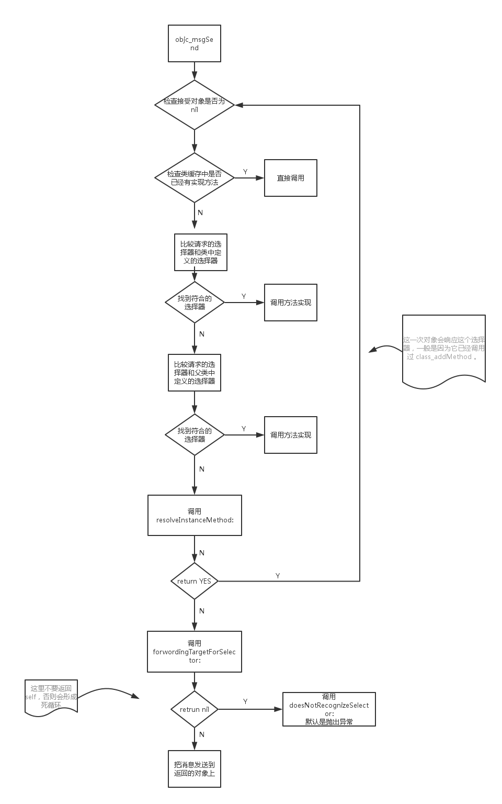

Part 0
看以下习题前可以先看看下面的别人整理好的面试题：
iOSInterviewQuestions【强烈推荐看】
Part 1
习题来自：iOS-InterviewQuestion-collection
0x01 内存管理
@autoreleasrPool 的释放时机？
在没有手加Autorelease Pool的情况下，Autorelease对象是在当前的runloop迭代结束时释放的，而它能够释放的原因是系统在每个runloop迭代中都加入了自动释放池Push和Pop
参考：
自动引用计（ARC）数应该遵循的原则?
不能使用 retain/release/retainCount/autorelease
不能使用 NSAllocateObject/NSDeallocateObject
须遵守内存管理的方法命名规则
不要显示调用dealloc
使用 @autorelease 块代替NSAutoreleasePool
不能使用区域（NSZone）
对象型变量不能作为C语言结固体的成员
显示转换“id”和”void *”
参考：
访问__weak修饰的变量，是否已经被注册在了 @autoreleasePool 中？为什么？
在访问 __weak 修饰的变量时，实际上必定会访问注册到 Autorelease Pool 的对象。如下来年两段代码是相同的效果：
1 | id __weak obj1 = obj0; |
为什么会这样呢？因为 __weak 修饰符只持有对象的弱引用，而在访问对象的过程中，该对象有可能被废弃，如果把被访问的对象注册到 Autorelease Pool 中，就能保证 Autorelease Pool 被销毁前对象是存在的。
参考：
ARC 的 retainCount 怎么存储的？
the reference counts for most objects are stored in hash tables. Have a look at the _objc_rootRetain function in runtime/objc-arr.mm
参考：
Where is the retain count stored for NSObjects in Objective C
简要说一下 @autoreleasePool 的数据结构
1 | AutoreleasePoolPage { |
magic用来校验AutoreleasePoolPage结构是否完整；
next指向第一个可用的地址；
thread指向当前的线程；
parent指向父类
child指向子类
参考：
__weak 和 _Unsafe_Unretain 的区别
weak与unsafe_unretained的区别在于，weak会将被释放指针赋值为nil，而unsafe_unretained则会成为野指针。
为什么已经有了 ARC ,但还是需要 @AutoreleasePool 的存在？
ARC 并不是舍弃了 @autoreleasepool，而是在编译阶段帮你插入必要的 retain/release/autorelease 的代码调用。
所以，跟你想象的不一样，ARC 之下依然是延时释放的，依然是依赖于 NSAutoreleasePool，跟非 ARC 模式下手动调用那些函数本质上毫无差别，只是编译器来做会保证引用计数的正确性。
__weak 属性修饰的变量，如何实现在变量没有强引用后自动置为 nil
runtime 对注册的类， 会进行布局，对于 weak 对象会放入一个 hash 表中。 用 weak 指向的对象内存地址作为 key，当此对象的引用计数为0的时候会 dealloc，假如 weak 指向的对象内存地址是a，那么就会以a为键， 在这个 weak 表中搜索，找到所有以a为键的 weak 对象，从而设置为 nil。
说一下对 retain,copy,assign,weak,_Unsafe_Unretain 关键字的理解
assign表明 setter 仅仅是一个简单的赋值操作，通常用于基本的数值类型，例如CGFloat和NSInteger。
weak表明属性定义了一个非拥有者关系。当给属性设定一个新值的时候，这个值不会进行 retain，旧值也不会进行 release， 而是进行类似 assign 的操作。不过当属性指向的对象被销毁时，该属性会被置为nil。
strong表明属性定义一个拥有者关系。当给属性设定一个新值的时候，首先这个值进行 retain ，旧值进行 release ，然后进行赋值操作。
copy类似于 strong，不过在赋值时进行 copy 操作而不是 retain 操作。通常在需要保留某个不可变对象（NSString最常见），并且防止它被意外改变时使用。
unsafe_unretained的语义和 assign 类似，不过是用于对象类型的，表示一个非拥有(unretained)的，同时也不会在对象被销毁时置为nil的(unsafe)关系。
参考：
NSString属性什么时候用copy，什么时候用strong?
ARC 在编译时做了哪些工作
根据代码执行的上下文语境，在适当的位置插入 retain，release
ARC 在运行时做了哪些工作
待查~
函数返回一个对象时，会对对象 autorelease 么？为什么？
参考 arc 内存管理要点 这篇。
说一下什么是 悬垂指针？什么是 野指针?
悬垂指针（dangling pointer）一般是说指向已经被释放的自由区内存（free store）的指针，野指针（wild pointer）则一般是未经初始化的指针。前者曾经有效过，后者从未有效过。
参考：
悬垂指针（Dangling pointer）和野指针（Wild pointer）
内存管理默认的关键字是什么？
strong
内存中的5大区分别是什么？
内存5大区:堆,栈,方法区,全局区,常量区
栈:不需要手动管理内存,会自动清理栈中的内存
堆: 需要手动管理内存
静态区:又称全局区
常量区: 储存常量的地方
方法区: 存放函数体的二进制代码
是否了解 深拷贝 和 浅拷贝 的概念，集合类深拷贝如何实现？
深拷贝是内存拷贝，指向的是不同的内存浅拷贝是指针拷贝，指向的是同一块内存
集合类深拷贝是通过归档、解档实现。
BAD_ACCESS 在什么情况下出现?
- 访问了野指针，比如对一个已经释放的对象执行了release、访问已经释放对象的成员变量或者发消息。
- 死循环
0x02 Runtime
类对象的数据结构？
Objective-C类是由Class类型来表示的，它实际上是一个指向objc_class结构体的指针。它的定义如下：
1 | typedef struct objc_class *Class; |
查看objc/runtime.h中objc_class结构体的定义如下：
1 | struct objc_class { |
在这个定义中，下面几个字段是我们感兴趣的
isa：需要注意的是在Objective-C中，所有的类自身也是一个对象，这个对象的Class里面也有一个isa指针，它指向metaClass(元类)，我们会在后面介绍它。super_class：指向该类的父类，如果该类已经是最顶层的根类(如NSObject或NSProxy)，则super_class为NULL。cache：用于缓存最近使用的方法。一个接收者对象接收到一个消息时，它会根据isa指针去查找能够响应这个消息的对象。在实际使用中，这个对象只有一部分方法是常用的，很多方法其实很少用或者根本用不上。这种情况下，如果每次消息来时，我们都是methodLists中遍历一遍，性能势必很差。这时，cache就派上用场了。在我们每次调用过一个方法后，这个方法就会被缓存到cache列表中，下次调用的时候runtime就会优先去cache中查找，如果cache没有，才去methodLists中查找方法。这样，对于那些经常用到的方法的调用，但提高了调用的效率。version：我们可以使用这个字段来提供类的版本信息。这对于对象的序列化非常有用，它可是让我们识别出不同类定义版本中实例变量布局的改变。
参考：
Objective-C Runtime 运行时之一：类与对象
实例对象的数据结构？
实例对象都是一个id类型的对象，查看objc.h中对id的描述：
1 | #if !OBJC_TYPES_DEFINED |
查看源文件，可以看出id其实就是一个指向objc_object结构体指针，它包含一个Class isa 成员。所以实例对象的数据结构实际上就是一个Class的数据结构。
元类对象的数据结构?
meta-class 是 Class 对象的类。每个 Class 都有个不同的自己的 meta-class（因此每个 Class 都可以有一个自己不同的方法列表）。也就是说每个类的 Class 不完全相同。
参考：
Objective-C 中的 Meta-class 是什么？
Category 的实现原理？以及如何实现添加一个属性？
参考：
如何运用 Runtime 字典转模型？
参考：
简单的版本如上，其他还有一些关键字的不能作为key值得还要映射一下的。还有嵌套的等等其他的要考虑。
Category 有哪些用途？
1）无需创建继承类，实现对已有类扩展。并且可以被扩展的类的所有子类自动继承。
2）可以用来修复没有源码类的bug。
3）对于一个类多个开发人员维护的情况，可以根据不同用途创建不同分类。
注意点：
1）不能在分类中重写系统方法，因为会把系统的功能给覆盖掉，而且分类中不能调用super。但是，这种情况可以用来修复，没有源码的类中方法有Bug的情况。
Category 和 Extension 有什么区别？
1)Category 的加载在运行时，Extension 的加载在编译时。
2) Extension 不能给没有源码的类添加方法。
3) Extension 是一个匿名的 Category 。
说一下 Method Swizzling? 说一下在实际开发中你在什么场景下使用过?
参考：
关于Method Swizzling踩过的坑，
参考这里
如何实现动态添加方法和属性？
1 | //动态创建类 |
上述代码，我们通过objc_allocateClassPair()创建了一个继承NSObject的person的子类，然后通过objc_registerClassPair()这个函数注册了person类，下面我们就可以使用这个类了，使用之前我们在给person类中添加一个name属性和sayHi:方法，分别通过class_addIvar()和class_addMethod()来添加，接下来我们要实现我们添加的sayHi:方法，如下：
1 | //这个函数必须写，要不然xcode会报错，实际运行的时候，这个函数是不会调用的 |
static void sayHi(id self, SEL _cmd, NSString *name)这个就是我们运行时候调用的方法，其中self使我们使用person创建的对象Tom,_cmd是调用的方法名，name就是传过来的参数，如果有多个参数，可以写成static void sayHi(id self, SEL _cmd, NSString *name,...)省略号可以填写你愿意添加的参数。
这样我们就利用runtime动态的创建了一个person类，包括了name属性和sayHi:方法，运行如结果如下：
1 | RunTimeDemo[46329:7242266] hello Jeck,my name is Tom |
参考：
说一下对 isa 指针的理解， 对象的isa 指针指向哪里？（注意区分不同对象）
网上有2种说法：
1）isa 是指向元类的指针，不了解元类的可以看 Objective-C 中的 Meta-class 是什么？
2) 任何直接或间接继承了NSObject的类，它的实例对象(instacne objec)中都有一个isa指针，指向它的类对象(class object)。这个类对象(class object)中存储了关于这个实例对象(instace object)所属的类的定义的一切：包括变量，方法，遵守的协议等等。
参考：
Objective-C 中的 Meta-class 是什么？
Obj-C 中的类信息存放在哪里？
类方法存储在元类。
当前类的信息都在 data 里。看看源码就知道了。
一个 NSObject 对象占用多少内存空间？
通过 size_t class_getInstanceSize ( Class cls )接口可以获取NSObject 对象占用内存空间大小。
1 | size_t z = class_getInstanceSize([NSObject class]); |
说一下对 class_rw_t 的理解？
rw代表可读可写。
ObjC 类中的属性、方法还有遵循的协议等信息都保存在 class_rw_t 中：
1 | struct class_rw_t { |
其中还有一个指向常量的指针 ro，其中存储了当前类在编译期就已经确定的属性、方法以及遵循的协议
参考：
说一下对 class_ro_t 的理解？
储了当前类在编译期就已经确定的属性、方法以及遵循的协议。
1 | struct class_ro_t { |
参考：
说一下 Runtime 消息解析和转发
先看一下流程图：

在 Object-C 中调用方法最终都会翻译成调用方法实现的的函数指针，并传递给它一个对象指针、一个选择器和一组函数参数。
objc_msgSend 的工作方式如下：
- 检查接受对象是否为
nil。如果是，调用nil处理程序。 - 在垃圾收集环境中（ios 不支持，写在这里是为了内容的完整性），检查有没有锻炼选择器（retain、release、autorelease、retainCount），如果有，返回 self。是的，这意味着在垃圾收集环境中 retainCount 会返回 self，不过你应该用不到。
- 检查类缓存中是不是已经有方法实现了，有的话，直接调用。
- 比较请求的选择器和类定义的选择器，如果找到了，调用方法实现。
- 比较请求的选择器和父类中定义的选择器，然后是父类的父类，以此类推。如果找到选择器，调用方法实现。
- 调用
resolveInstanceMethod:( 或者resolveClassMethod:)。如果它返回YES，那么重新开始。这一次对象会相应这个选择器，一般是因为它已经调用过class_addMethod。 - 调用
forwardingTargetForSelector:，如果返回非 nil，那就把消息发送到返回的对象上。这里不要返回 self，否则会形成死循环。 - 调用
methodSignatureForSelector:，如果返回一个非 nil，创建一个NSInvocation并传给forwardInvocation。 - 调用
doesNotRecognizeSelector:，默认是抛出异常。
例子🌰
Xcode何时会报unrecognized selector的错误
1 | - (void)viewDidLoad { |
当向AAPerson发送test这个消息时，runtime会根据对象的isa指针找到该对象实际所属的类，然后在该类的方法列表以及父类的方法列表里面找相应的方法运行，如果在最顶层的父类中依然找不到相应的方法实现时，程序在运行时就会报unrecognized selector sent to的错误并且崩溃，但是在此之前，objc的运行时给出了三次避免程序崩溃的机会。
1、Method resolution
objc运行时会调用+resolveInstanceMethod:或者+resolveClassMethod:，让我们有机会提供一个函数实现而不导致程序崩溃，如果在这里面添加了函数，系统就会重新启动一次消息发送的过程，否则就会进入到消息的快速转发流程。
1 | + (BOOL)resolveInstanceMethod:(SEL)sel { |
2、Fast forwarding
如果目标对象实现了-forwardingTargetForSelector:的方法，runtime就会调用这个方法，给我们一个机会把这个消息转发给其他的对象，只要这个方法返回值不是nil和self，整个消息发送的过程就会被重启，这时发送的对象会变成我们返回的这个对象，否则就会移到下一步。
1 | - (id)forwardingTargetForSelector:(SEL)aSelector { |
3、Normal Fowarding
如果上面两种方法都没有被实现的话，就会来到第三步 —— 普通转发，这是runtime给我们最后一次避免崩溃的机会，首先它会-methodSignatureForSelector:来获得函数的参数和返回值类型，如果返回值为nil，则runtime会发出-doesNotRecognizeSelector: 的消息，程序崩溃。如果返回了一个函数签名，runtime会创建一个NSInvocation对象并发送-forwardInvocation:的消息给目标对象。
1 | - (NSMethodSignature *)methodSignatureForSelector:(SEL)aSelector { |
如果上面的三步都没有实现的话，就会调用-doesNotRecognizeSelector:，程序崩溃。
如何运用 Runtime 字典转模型?
Runtime 遍历 ivar_list,结合 KVC 赋值。
Note:
对于特殊的(如id)或者自定义的属性和字典中的key不一样的时候会报错，这时候需要重写- (void)setValue:(id)value forUndefinedKey:(NSString *)key方法。
参考：
如何运用 Runtime 进行模型的归解档？
Runtime 遍历 ivar_list。
参考：
在 Obj-C 中为什么叫发消息而不叫函数调用？
结合 objc_msgsend 讲一下，接收消息的过程。
说一下 Runtime 的方法缓存？存储的形式、数据结构以及查找的过程？
cache_t增量扩展的哈希表结构。哈希表内部存储的 bucket_t。
如果是有序方法列表，采用二分查找
如果是无序方法列表，直接遍历查找
0x03 RunLoop
Runloop 和线程的关系
一个线程对应一个
Runloop。主线程的默认就有了
Runloop。子线程的
Runloop以懒加载的形式创建。Runloop存储在一个全局的可变字典里，线程是key，Runloop是value
讲一下 Runloop 的 Mode?(越详细越好)
苹果文档中提到的 Mode 有五个，分别是：
- NSDefaultRunLoopMode
- NSConnectionReplyMode
- NSModalPanelRunLoopMode
- NSEventTrackingRunLoopMode
- NSRunLoopCommonModes
iOS 中公开暴露出来的只有 NSDefaultRunLoopMode 和 NSRunLoopCommonModes。 NSRunLoopCommonModes 实际上是一个 Mode 的集合，默认包括 NSDefaultRunLoopMode 和 NSEventTrackingRunLoopMode。
参考：
讲一下 Observer ？（Mode中的重点）
1 | typedef CF_OPTIONS(CFOptionFlags, CFRunLoopActivity) { |
讲一下 Runloop 的内部实现逻辑？（运行过程）
参考：
你所知的哪些三方框架使用了 Runloop?（AFNetworking、Texture 等)
解释一下 事件响应 的过程
苹果注册了一个 Source1 (基于 mach port 的) 用来接收系统事件，其回调函数为 __IOHIDEventSystemClientQueueCallback()。
当一个硬件事件(触摸/锁屏/摇晃等)发生后，首先由 IOKit.framework 生成一个 IOHIDEvent 事件并由 SpringBoard 接收。这个过程的详细情况可以参考这里。SpringBoard 只接收按键(锁屏/静音等)，触摸，加速，接近传感器等几种 Event，随后用 mach port 转发给需要的 App 进程。随后苹果注册的那个 Source1 就会触发回调，并调用 _UIApplicationHandleEventQueue() 进行应用内部的分发。
_UIApplicationHandleEventQueue() 会把 IOHIDEvent 处理并包装成 UIEvent 进行处理或分发，其中包括识别 UIGesture/处理屏幕旋转/发送给 UIWindow 等。通常事件比如 UIButton 点击、touchesBegin/Move/End/Cancel 事件都是在这个回调中完成的。
详细参考（推荐阅读）：
解释一下 手势识别 的过程？
当上面的 _UIApplicationHandleEventQueue()识别了一个手势时，其首先会调用 Cancel 将当前的 touchesBegin/Move/End 系列回调打断。随后系统将对应的 UIGestureRecognizer 标记为待处理。
苹果注册了一个 Observer 监测 BeforeWaiting (Loop即将进入休眠) 事件，这个 Observer 的回调函数是 _UIGestureRecognizerUpdateObserver()，其内部会获取所有刚被标记为待处理的 GestureRecognizer，并执行GestureRecognizer 的回调。
当有 UIGestureRecognizer 的变化(创建/销毁/状态改变)时，这个回调都会进行相应处理。
解释一下 GCD 在 Runloop 中的使用？
1、RunLoop 的超时时间
这是 RunLoop的 API：
1 | //mode默认为defaultMode、超时时间是100亿秒、false |
RunLoop 的超时时间就是使用 GCD 中的 dispatch_source_t来实现的。
2、执行GCD MainQueue上的异步任务，即：dispatch_async(dispatch_get_main_queue(), block)产生的任务。
参考：
RunLoop总结：RunLoop 与GCD 、Autorelease Pool之间的关系
解释一下 NSTimer，以及 NSTimer 的循环引用
NSTimer 其实就是 CFRunLoopTimerRef，他们之间是 toll-free bridged的。一个 NSTimer 注册到 RunLoop 后，RunLoop 会为其重复的时间点注册好事件。例如 10:00, 10:10, 10:20 这几个时间点。RunLoop 为了节省资源，并不会在非常准确的时间点回调这个Timer。Timer 有个属性叫做 Tolerance (宽容度)，标示了当时间点到后，容许有多少最大误差。
如果某个时间点被错过了，例如执行了一个很长的任务，则那个时间点的回调也会跳过去，不会延后执行。
引起 NSTimer 循环引用的主要是捕获了self了，如下：
1 | self.timer = [NSTimer scheduledTimerWithTimeInterval:1 |
就算是将上面的self改为weakSelf也没有用，最好的解决办法是用GCD的dispatch_source解决。
如下：
1 | #import "RNTimer.h" |
参考链接：
拓展：
AFNetworking中如何运用Runloop?AFURLConnectionOperation 这个类是基于 NSURLConnection 构建的，其希望能在后台线程接收 Delegate 回调。为此 AFNetworking 单独创建了一个线程，并在这个线程中启动了一个 RunLoop：
1 | + (void)networkRequestThreadEntryPoint:(id)__unused object { |
RunLoop 启动前内部必须要有至少一个 Timer/Observer/Source，所以 AFNetworking 在 [runLoop run] 之前先创建了一个新的NSMachPort 添加进去了。通常情况下，调用者需要持有这个 NSMachPort (mach_port) 并在外部线程通过这个 port 发送消息到 loop 内；但此处添加 port 只是为了让 RunLoop 不至于退出，并没有用于实际的发送消息。
1 | - (void)start { |
当需要这个后台线程执行任务时，AFNetworking 通过调用 [NSObject performSelector:onThread:..] 将这个任务扔到了后台线程的 RunLoop 中。
PerformSelector 的实现原理
当调用 NSObject 的 performSelecter:afterDelay: 后，实际上其内部会创建一个 Timer 并添加到当前线程的 RunLoop 中。所以如果当前线程没有 RunLoop，则这个方法会失效。
当调用 performSelector:onThread: 时，实际上其会创建一个 Timer 加到对应的线程去，同样的，如果对应线程没有 RunLoop 该方法也会失效。
其他的performSelector系列方法是类似的
1 | - (void)viewDidLoad { |
执行结果：
1 | 2018-05-16 11:38:20.939516+0800 Test[6410:1215068] execute -[ViewController mainThreadMethod] |